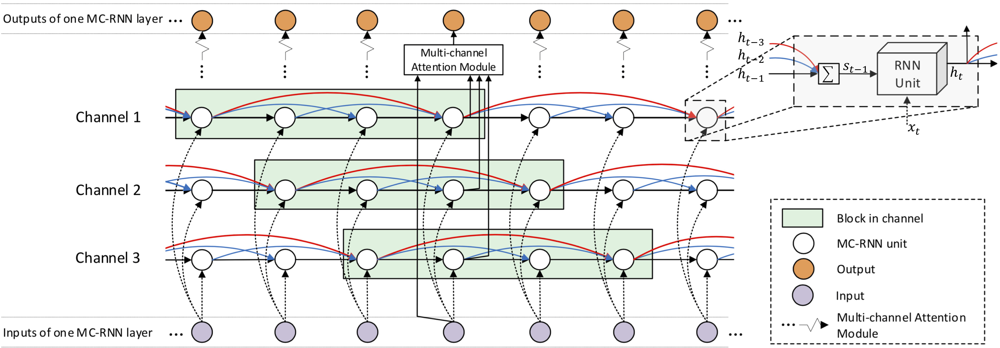

Published in AAAI, 2019
Recurrent Neural Networks (RNNs) have been widely used in processing natural language tasks and achieve huge success. Traditional RNNs usually treat each token in a sentence uniformly and equally. However, this may miss the rich semantic structure information of a sentence, which is useful for understanding natural languages. Since semantic structures such as word dependence patterns are not parameterized, it is a challenge to capture and leverage structure information. In this paper, we propose an improved variant of RNN, Multi-Channel RNN (MC-RNN), to dynamically capture and leverage local semantic structure information. Concretely, MC-RNN contains multiple channels, each of which represents a local dependence pattern at a time. An attention mechanism is introduced to combine these patterns at each step, according to the semantic information. Then we parameterize structure information by adaptively selecting the most appropriate connection structures among channels. In this way, diverse local structures and dependence patterns in sentences can be well captured by MC-RNN. To verify the effectiveness of MC-RNN, we conduct extensive experiments on typical natural language processing tasks, including neural machine translation, abstractive summarization, and language modeling. Experimental results on these tasks all show significant improvements of MC-RNN over current top systems. 